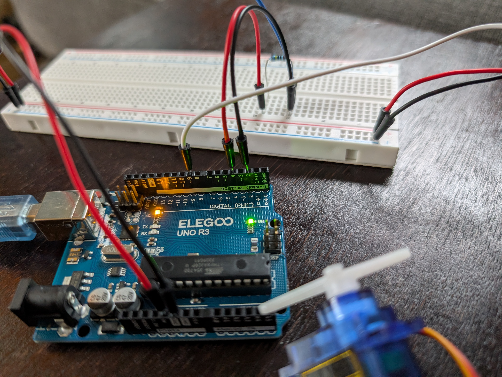
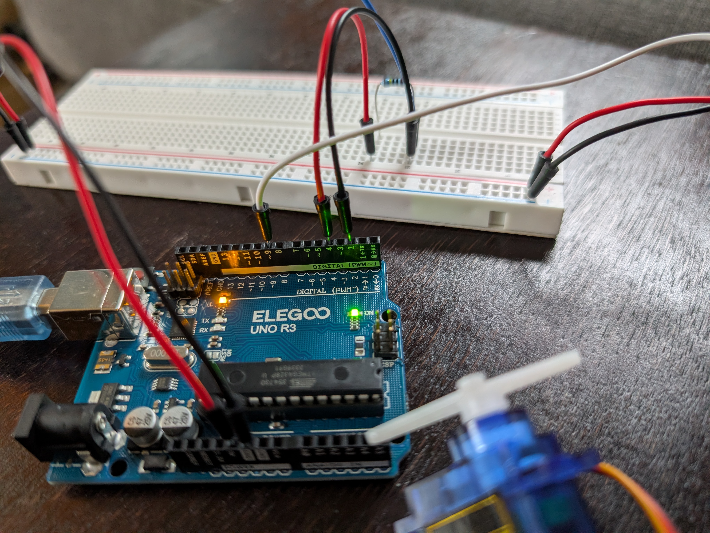

I used a 1M Ω resistor because I only wanted the wire to sense absolute touch, not anything farther away.
// use the capacitive sensor library
#include <CapacitiveSensor.h>
// use the servo motor library
#include <Servo.h>
// create the capacitive sensor object, using pins 2 and 4 (2 as the input)
CapacitiveSensor sensor = CapacitiveSensor(4, 2);
// create the servo motor object
Servo servo;
// create the variable output to the servo motor
int outputVal;
// do once at the beginning
void setup() {
// set the pin number for the servo motor to pin 9
servo.attach(9);
}
void loop() {
// read the value of the capacitive sensor (across 30 values to average it out)
long inputVal = sensor.capacitiveSensor(30);
// create the value to write to the servo motor (first map from 0 to 1000 to 0 to 180, then constrain to between 0 and 180)
outputVal = constrain(map(inputVal, 0, 1000, 0, 180), 0, 180);
// write the output value to the servo motor
servo.write(outputVal);
// wait 10 miliseconds before looping
delay(10);
}In my map() function, I used 0 to 1,000 for the range of the input values because when I tested the input values from the sensor using Serial.print(), I determined that the value was generally less than 100 while not touching the wire, but went up to around 1,000 or more when I was touching it. This means using 1,000 as the upper bound for the range would add a little bit of variation in the exact placement of the motor but would generally be almost or exactly 180 (after constraining it) while touching it.
I used 0 to 180 for range of the output values because that is how far the servo motor goes, and then I also constrained the mapped value from 0 to 180 because the input value did get above 1,000, but I just wanted anything above 1,000 to equal 180.
I would address this by taking the average of the past few readings of the sensor to smooth out the data and remove outliers. In my code, I would add:
sensorValue = the past ten readings / 10;If the erroneous readings were significantly higher than the expected, then instead of just averaging, I could check each reading with the last one and determine if it is close enough to the last to make sense. So, my code would look like this:
if (sensorValue > 2.5 * prevSensorValue) {
sensorValue = prevSensorValue;
}(2.5, or whatever other value makes sense to remove erroneous readings)
I would address this by taking the average of the past few readings. Because the readings are not significantly higher or lower than expected, it wouldn't make sense to only remove values that are higher by a certain amount; instead it would make more sense to just average the readings, like this:
sensorValue = the past ten readings / 10;I did not use AI for this assignment.